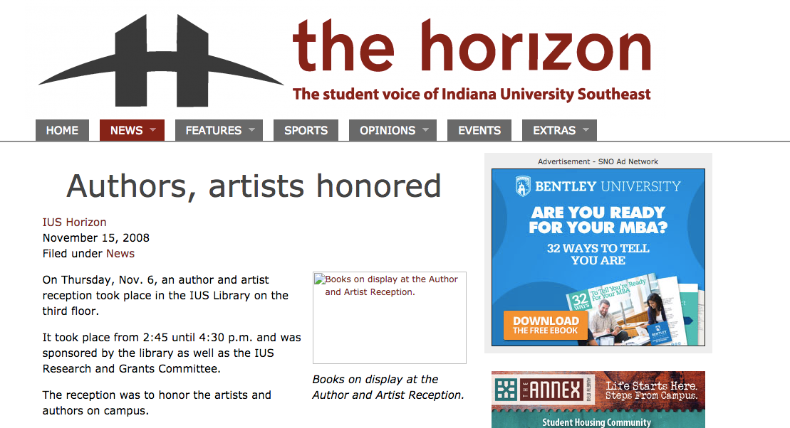
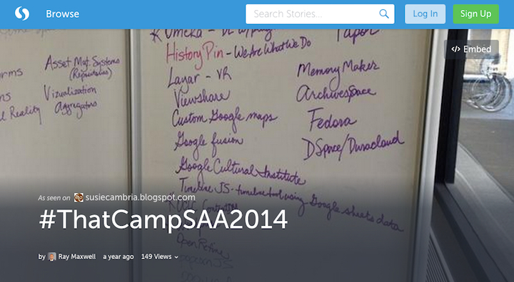

Authors and Artists Showcase
How can we increase attendance and participation?
To follow along, load this in your browser: http://www.ryanpatrickrandall.com/talks/iusoutreach.html
Created by Ryan P. Randall
So much potential!

Tactics
- Social Media Outreach
- Integration with Existing Venues
- Incentives for Participation / Attendance
Social Media Outreach
- Targets Involved Community Members
- Reinforces Sense of Community
- Provides Simple Documentation
- Potential for Quantitative & Qualitative Assessment
Targets Involved Community Members
Reinforces Communitas
Photo by North Ireland Execuive Used with a CC-BY-NC-ND license.Creates Minimal Documentation
Assessment
Can provide both quantitative and qualitative data

- How many people interacted with the event online?
- How did they interact?
Afterwards

- Storify lets you easily find and curate posts with a particular hashtag.
Costs of Social Media
- Time
- Effort
- That's basically it
Integration with Existing Venues
Library in the Life of the User, not the User in the Life of the Library
- Reach out to creative writing and fine arts courses being taught
- Reach out to professors
- Reach out campus organizations
Integration with Existing Venues

- Fliers galore, in the library & elsewhere on campus
- Invite *Horizon* writers to cover event, perhaps even offering to arrange interviews with participants
- Reach out to creative writing and fine arts courses being taught
Integration with Existing Venues
Social Media Venues
Costs of Physical Integration
- Money for Fliers
- Time & Effort of Designing Fliers
- Time & Effort of Disseminating Fliers
Incentivising Participation

- Simple as Pizza or Cookies
- Elaborate as Awards or Purchasing for Collection
Incentivising Participation
Feed Them and They Will Come
- Pizza or Cookies
- Thanksgiving or Fall-Themed Baked Goods/Drinks
Incentivising Participation
Awards
- Small Prizes
- Juried Awards
- Offer to Collect Pieces
- Offer to Feature Pieces on an Omeka or Similar Site
Authors & Authors Showcase
Three Main Tacks
- Social Media Outreach
- Integration with Existing Venues
- Incentives for Participation / Attendance
Let's be prudent, but let's make it happen!
Thank you for your time!